IndiAPIs: Access Indian Data via Public APIs and Curated Datasets
Source:vignettes/IndiAPIs_vignette.Rmd
IndiAPIs_vignette.Rmd
library(IndiAPIs)
library(ggplot2)
library(dplyr)
#>
#> Attaching package: 'dplyr'
#> The following objects are masked from 'package:stats':
#>
#> filter, lag
#> The following objects are masked from 'package:base':
#>
#> intersect, setdiff, setequal, unionIntroduction
The IndiAPIs package provides a unified interface to
access open data from the World Bank API and the
REST Countries API, with a focus on
India. It allows users to retrieve up-to-date or
historical information on topics such as economic indicators,
international demographic statistics, and key geopolitical details
related to India.
In addition to API-access functions, the package includes one of the largest curated collections of open datasets focused on India. These datasets cover a wide range of topics including population, economy, weather, politics, health, biodiversity, sports, agriculture, cybercrime, infrastructure, and more.
IndiAPIs is designed to support users working with data
related to India by integrating international RESTful
APIs with structured and reliable datasets from public, academic, and
government sources into a single, easy-to-use R package.
Functions for IndiAPIs
The IndiAPIs package provides several core functions to
access real-time and structured information about India
from public APIs such as the World Bank API and the
REST Countries API.
Below is a list of the main functions included in the package:
get_india_child_mortality(): Get India’s Under-5 Mortality Rate from World Bank.get_india_cpi(): Get India’s Consumer Price Index (2010 = 100) from World Bank.get_india_energy_use(): Get India’s Energy Use (kg of oil equivalent per capita) from World Bank.get_india_gdp(): Get India’s GDP (current US$) from World Bank.get_india_hospital_beds(): Get India’s Hospital Beds (per 1,000 people) from World Bank.get_india_life_expectancy(): Get India’s Life Expectancy at Birth from World Bank.get_india_literacy_rate(): Get India’s Adult Literacy Rate from World Bank.get_india_population(): Get India’s Total Population from World Bank.get_india_unemployment(): Get India’s Unemployment Rate (% of total labor force) from World Bank.get_country_info_in(): Get Key Country Information for India.view_datasets_IndiAPIs(): View Available Datasets in IndiAPIs.
These functions allow users to access high-quality and structured
information on India, which can be combined with tools
like dplyr and ggplot2 to support a
wide range of data analysis, visualization, and research tasks. In the
following sections, you’ll find examples on how to work with
IndiAPIs in practical scenarios.
IndiAPIs’ GDP (Current US$) from World Bank 2022 - 2017
india_gdp <- head(get_india_gdp())
print(india_gdp)
#> # A tibble: 6 × 5
#> indicator country year value value_label
#> <chr> <chr> <int> <dbl> <chr>
#> 1 GDP (current US$) India 2022 3.35e12 3,346,107,287,731
#> 2 GDP (current US$) India 2021 3.17e12 3,167,270,623,260
#> 3 GDP (current US$) India 2020 2.67e12 2,674,851,578,587
#> 4 GDP (current US$) India 2019 2.84e12 2,835,606,256,558
#> 5 GDP (current US$) India 2018 2.70e12 2,702,929,641,649
#> 6 GDP (current US$) India 2017 2.65e12 2,651,474,262,755IndiAPIs’ Life Expectancy at Birth from World Bank 2022 - 2017
india_life_expectancy <- head(get_india_life_expectancy())
print(india_life_expectancy)
#> # A tibble: 6 × 4
#> indicator country year value
#> <chr> <chr> <int> <dbl>
#> 1 Life expectancy at birth, total (years) India 2022 71.7
#> 2 Life expectancy at birth, total (years) India 2021 67.3
#> 3 Life expectancy at birth, total (years) India 2020 70.2
#> 4 Life expectancy at birth, total (years) India 2019 70.7
#> 5 Life expectancy at birth, total (years) India 2018 70.4
#> 6 Life expectancy at birth, total (years) India 2017 70.1IndiAPIs’ Total Population from World Bank 2022 - 2017
india_population <- head(get_india_population())
print(india_population)
#> # A tibble: 6 × 5
#> indicator country year value value_label
#> <chr> <chr> <int> <int> <chr>
#> 1 Population, total India 2022 1425423212 1,425,423,212
#> 2 Population, total India 2021 1414203896 1,414,203,896
#> 3 Population, total India 2020 1402617695 1,402,617,695
#> 4 Population, total India 2019 1389030312 1,389,030,312
#> 5 Population, total India 2018 1374659064 1,374,659,064
#> 6 Population, total India 2017 1359657400 1,359,657,400Gold Prices Across Indian Cities
# Calculate average prices by city
city_avg <- GoldPricesIndia_df %>%
mutate(
Chennai_Avg = (Chennai_Low + Chennai_High) / 2,
Kolkatta_Avg = (Kolkatta_Low + Kolkatta_High) / 2,
Bangalore_Avg = (Bangalore_Low + Bangalore_High) / 2,
Madurai_Avg = (Madurai_Low + Madurai_High) / 2,
Hyderabad_Avg = (Hyderabad_Low + Hyderabad_High) / 2,
Delhi_Avg = (Delhi_Low + Delhi_High) / 2,
Month = factor(Month, levels = c("Feb", "Mar", "Apr", "May", "Jun",
"Jul", "Aug", "Sep", "Oct", "Nov", "Dec", "Jan"))
)
# Create the plot
ggplot(city_avg, aes(x = Month)) +
geom_line(aes(y = Chennai_Avg, color = "Chennai", group = 1)) +
geom_line(aes(y = Kolkatta_Avg, color = "Kolkatta", group = 1)) +
geom_line(aes(y = Bangalore_Avg, color = "Bangalore", group = 1)) +
geom_line(aes(y = Madurai_Avg, color = "Madurai", group = 1)) +
geom_line(aes(y = Hyderabad_Avg, color = "Hyderabad", group = 1)) +
geom_line(aes(y = Delhi_Avg, color = "Delhi", group = 1)) +
labs(title = "Gold Prices Across Indian Cities",
x = "Month",
y = "Average Price (INR)",
color = "City") +
theme_minimal() +
theme(axis.text.x = element_text(angle = 45, hjust = 1))
Dataset Suffixes
Each dataset in IndiAPIs is labeled with a
suffix to indicate its structure and type:
_df: A standard data frame object._dt: A data table object._ts: A time series object.
Datasets Included in IndiAPIs
In addition to API access functions, IndiAPIs offers one
of the largest curated collections of open datasets focused on
India. These preloaded datasets cover a wide range of
topics including population, economy, weather, politics, health,
biodiversity, sports, agriculture, cybercrime, infrastructure, and more.
Below are some featured examples:
BurdwanWeather_df: A data frame containing weekly weather data for the rice growing season in the Burdwan district of West Bengal, India.birds_watching_tbl_df: A tibble containing detailed information on bird species observed in India, including species names, scientific names, the date of last observation.DelhiPotatoPrices_ts: A time series containing the monthly average potato prices of the Delhi market from January 2010 to July 2020.
Conclusion
The IndiAPIs package offers a unified interface for
accessing both real-time data from public APIs and a rich collection of
curated datasets about India. Covering a wide range of
topics from economic indicators, international demographic and
geopolitical statistics via global APIs, to detailed datasets on
population, economy, weather, politics, health, biodiversity, sports,
agriculture, cybercrime, infrastructure, and more, IndiAPIs
provides users with reliable, structured, and high-quality data.
Unlike tools that focus exclusively on API access,
IndiAPIs includes one of the most comprehensive collections
of preloaded open datasets related to India, enabling
deeper exploration of the country’s historical, social, and economic
landscape.
Designed to support reproducible research, education, and data journalism, the package empowers users to analyze and visualize India-focused data directly within R, using tidy data formats and well-documented sources.